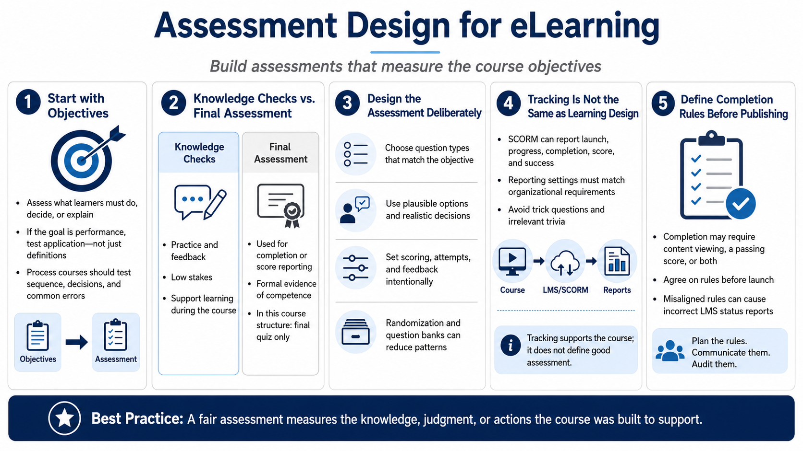

Quizzes, Assessment, and Completion
Connecting to LMS... Progress: in progress

Narration
Assessment design begins with the learning objectives. If the course says learners should choose the right response in a realistic situation, the quiz should not only ask them to recall definitions. If the course teaches a process, questions should test sequence, decision points, and common errors. A quiz is strongest when it measures what the course actually promised to teach.
Knowledge checks and final assessments serve different purposes. Knowledge checks are usually low-stakes practice and feedback inside the learning experience. A final assessment is often used for completion, score reporting, or formal evidence that the learner met a requirement. In this course structure, assessment questions are reserved for the final quiz only, which keeps instruction and grading clearly separated.
Question types, scoring, attempts, feedback, randomization, and question banks should support the assessment goal. Multiple choice can be effective when options represent plausible decisions. Randomized answer order can reduce obvious patterns. Attempts and feedback should be chosen carefully. Too much feedback during a formal assessment can reveal answers, while too little feedback during practice can leave learners confused.
SCORM completion and success are tracking concepts, not learning design by themselves. A course may report launch, progress, completion, score, success, and interaction data to an LMS depending on publishing and runtime behavior. Those settings need to match the organization requirement. Avoid trick questions and irrelevant trivia. A fair assessment asks learners to demonstrate the knowledge, judgment, or actions the course was built to support.
Completion rules should be agreed on before publishing. Some organizations need completion based on viewing required content, some need a passing quiz score, and some need both. If those rules are unclear, the course may appear successful during development but fail when the LMS reports the wrong status to managers or compliance teams.